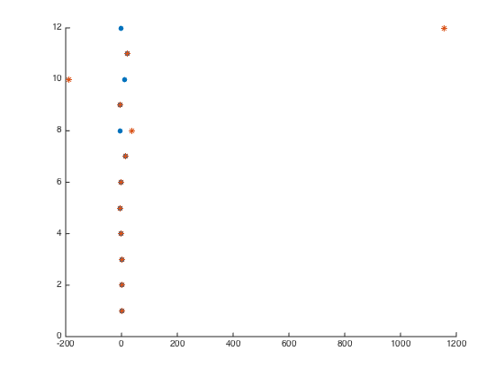

Contents
Part C
robot_coin_collector;
A = [ 0.5 0 0 0 0 0
2 0 0 0 0 0;
4 0.5 0 0 0 0;
6 2 0 0 0 0;
8 4 0.5 0 0 0;
10 6 2 0 0 0;
12 8 4 0.5 0 0;
14 10 6 2 0 0;
16 12 8 4 0.5 0;
18 14 10 6 2 0;
20 16 12 8 4 0.5;
22 18 14 10 6 2];
fEst = (A'*A)\A'*x;
res = norm(A*fEst - x)^2;
if( res > 0.0001)
['The robot is not able to collect all of the coins. The residual is ' num2str(res)]
else
'The robot is able to collect all coins becaues J = 0'
end
ans =
The robot is not able to collect all of the coins. The residual is 37.992

Part E
for i = 1:2*n
if i == 1
A = 0.5;
continue;
elseif i == 2
A = [0.5;2];
continue;
elseif mod(i,2) == 0
arow = zeros(1, i/2);
arow(end) = 2;
for j = 1:length(arow)-1
arow(j) = 2*(i-1) - 4*(j-1);
end
else
arow = zeros(1, (i+1)/2);
arow(end) = 0.5;
for j = 1:length(arow)-1
arow(j) = 2*(i-1) - 4*(j-1);
end
end
if( mod(i,2) ~= 0)
A = [A zeros(i-1,1)];
end
A = [ A ; arow];
if mod(i,2) ~= 0
rows = 1:2:i;
f = (A(rows,:)'*A(rows,:))\A(rows,:)'*x(rows);
end
res = norm(A*f - x(1:i))^2;
if res > 0.0001
['The residual is non-zero and therefore coin ' num2str(i) ' cannot be reached']
end
end
xpositions = A*forces;
forces
figure; hold;
plot(x,1:2*n,'.','MarkerSize',20);
plot(xpositions, 1:2*n, '*');
ans =
The residual is non-zero and therefore coin 8 cannot be reached
ans =
The residual is non-zero and therefore coin 9 cannot be reached
ans =
The residual is non-zero and therefore coin 10 cannot be reached
ans =
The residual is non-zero and therefore coin 11 cannot be reached
ans =
The residual is non-zero and therefore coin 12 cannot be reached
forces =
1.0000
-4.0000
7.0000
10.0000
-140.0000
925.0000
Current plot held
